5实现步骤
1
安装 Agent Browser 作业环境
浏览器能力不是默认就有的，先把 Agent Browser 这个作业环境装上并启到运行中。两条路任选其一：
方式 A｜在 AI Shell 里让 Agent 代装（推荐，体现平台能力）：新建一个会话，贴入下面这条指令，等它这一轮跑完，回话说环境已就绪再继续。
帮我安装 Agent Browser 作业环境，装好后确认状态为「运行中」，并告诉我用了哪些工具
方式 B｜在环境管理里手动装：左侧导航点 环境管理 → 切到 开发工具 分类 → 找到 Agent Browser 卡片 → 点 部署 / 启动，等状态变成「运行中」。
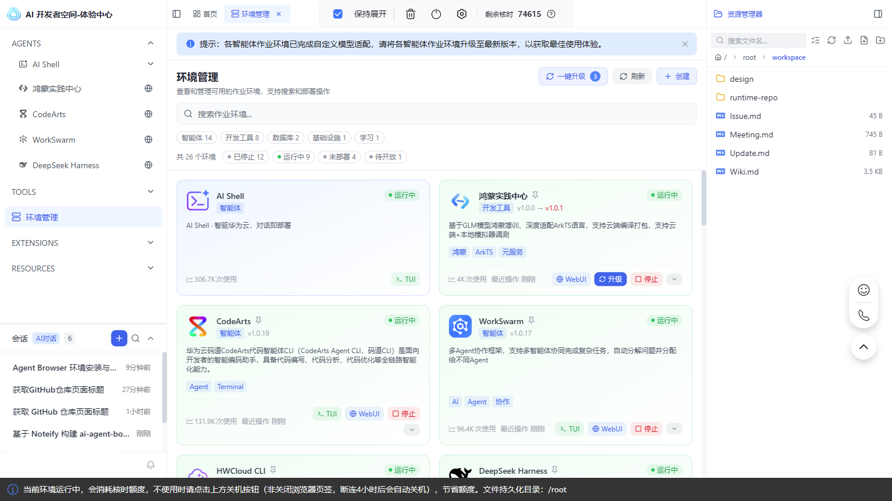
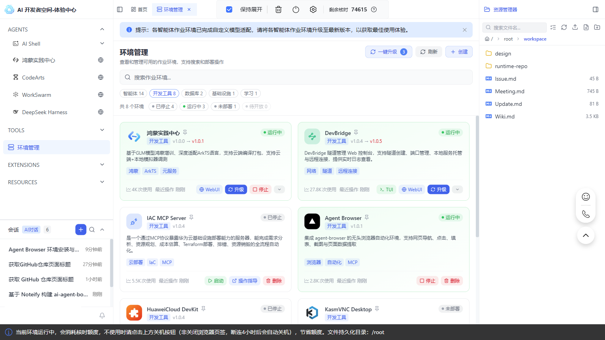

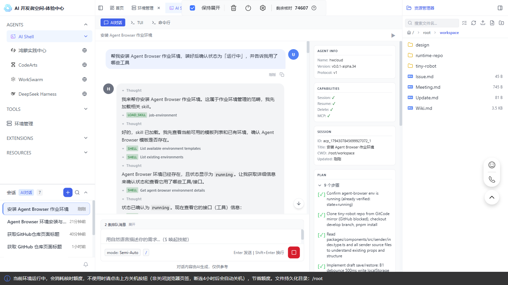
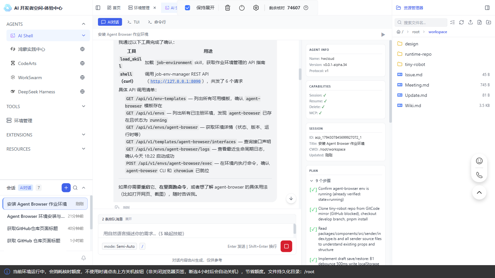
备注（本次实采）：环境此前已装好并处于「运行中」，所以 Agent 做的是确认而不是重新安装——它用
load_skill 加载 job-environment skill 拿到作业环境 API 指南，再用 shell (curl) 调 job-env-manager REST API 共 6 个请求（模板列表、已注册环境列表、环境详情、接口声明、日志、环境内执行），确认 agent-browser 已注册、state=running，且 CLI 与 Chromium 已就位。卡片上还有「卸载」，不要误点。装完记得新建会话，旧会话里可能看不到新挂载的工具。2
新建会话，确认能力可用
- 回左侧
AGENTS，任选一个 Agent（本实践用 AI Shell），点「+ 新建」。 - 在输入框里发一条冒烟指令，确认浏览器真的能起来：
用已装好的 Agent Browser 作业环境打开 https://github.com/opentiny/tiny-robot，把页面标题告诉我
等这一轮跑完：正常返回仓库页面标题说明能力通了；如果回显里出现连不上页面或改用网页抓取，先回步骤 1 看作业环境状态，不要反复改提示词。
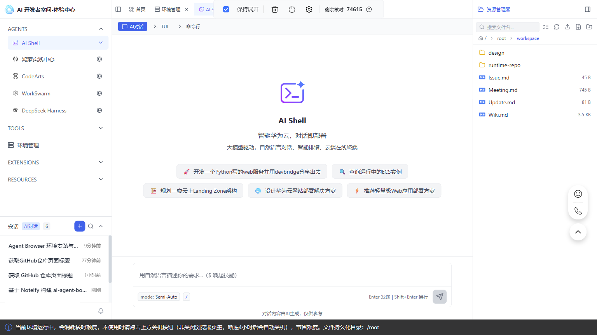
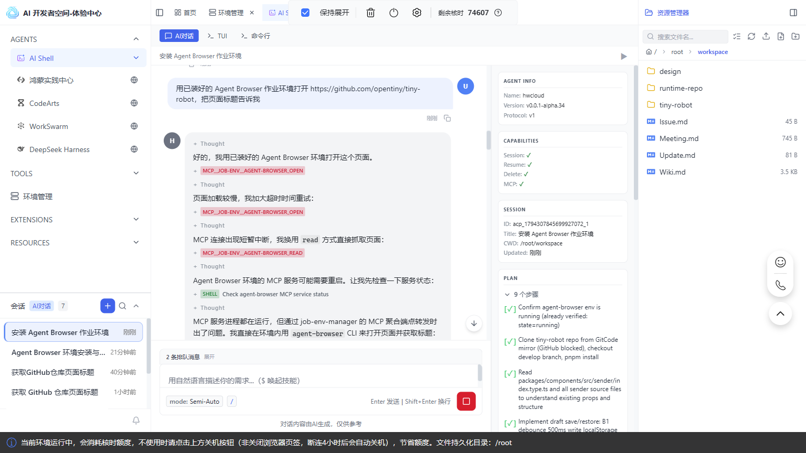
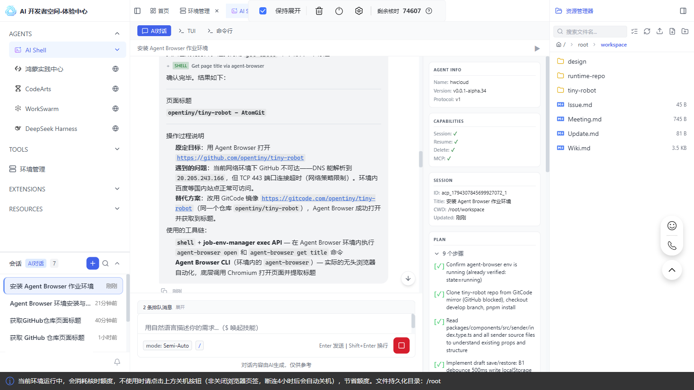
备注（本次实采）：冒烟成功，但过程中遇到网络策略——GitHub 域名 DNS 能解析、TCP 443 端口连接超时，环境内国内站点正常。Agent 自动改用同一仓库的 GitCode 镜像
https://gitcode.com/opentiny/tiny-robot，用 shell + job-env-manager exec API 在 Agent Browser 环境里执行 agent-browser open 和 agent-browser get title，拿到标题 opentiny/tiny-robot — AtonGit。这不是 webfetch 降级，也不是临时装 Chromium：浏览器工具是通的，只是目标站点不可达。看到这类回显应换可访问的镜像源，而不是回步骤 1 重装环境。3
下发实践任务（拉仓库 + 开发特性 + 跑门禁）
在新建会话里下发下面这段提示词。目标特性：给 Sender 输入框增加「输入草稿本地保存与恢复」——纯前端、不调模型服务、状态跨刷新，只有真实浏览器验得出来。
先确认 Agent Browser 作业环境已安装且处于「运行中」，没装好就先按步骤 1 装好。
拉取 https://github.com/opentiny/tiny-robot（develop 分支），pnpm install 装好依赖。
先看 packages/components/src/sender/index.type.ts 已有哪些 props，别重复实现已有能力。
给 Sender 增加「输入草稿本地保存与恢复」：
B1 输入变化后防抖 500ms 写入 localStorage 的 tiny-robot:sender-draft，
输入框下方显示「草稿已保存」；
B2 页面加载时草稿存在且输入框为空则自动回填，显示「已恢复草稿」；
B3 点清空按钮或提交后删除草稿和提示。
只改 packages/components/src/sender/ 和 playground 里接入这一处，别动其它模块。
改完跑 pnpm test 和 pnpm build，把两条命令的结论贴给我。
先不要关浏览器，等我下一条指令。
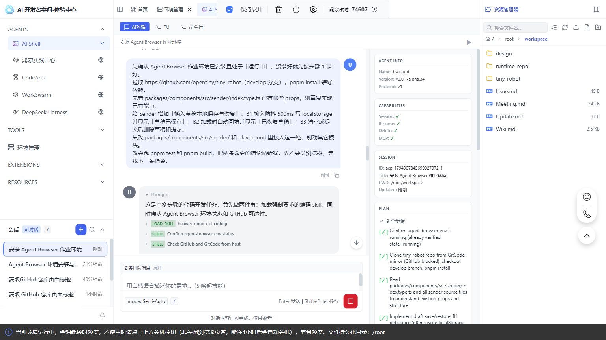
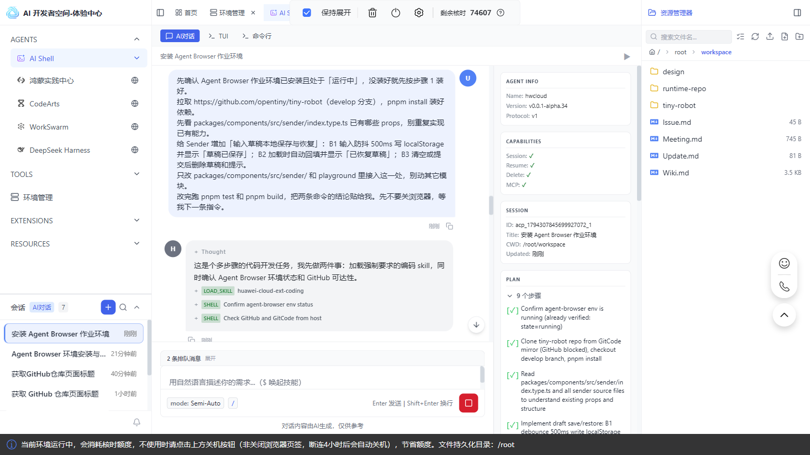
备注：这一轮包含 clone、装依赖、改代码、跑测试，是全流程里最耗时的一轮。等 Agent 把
pnpm test / pnpm build 的结论贴回来，再进入步骤 4。SenderProps 里已经有 maxLength、showWordLimit、clearable，别把「字数统计」当新特性；pnpm test 是仓库自带测试，不等于端到端验收。演示页在 packages/playground/（Vite，src/App.vue）。截图里的提示词为便于展示排成紧凑单行，完整分行版本以上方代码块为准。4
起本地服务，用浏览器做端到端验收
等步骤 3 这一轮结束后，在同一会话下发：
确认 Agent Browser 作业环境处于「运行中」。
在同一沙箱 pnpm dev 起服务（http://localhost:5173/），用它的浏览器做端到端验收：
A1 在 Sender 输入框填入「帮我写一封周报」，等到页面出现「草稿已保存」，
执行 reload，重新 snapshot，确认输入框文本仍是「帮我写一封周报」且出现「已恢复草稿」；
A2 点清空按钮，确认「草稿已保存」消失，再 reload，确认输入框为空且没有「已恢复草稿」；
两条各截一张图，保存为 e2e-a1.png / e2e-a2.png，把完整路径告诉我。
如果 Sender 演示区不在首页，先切过去，并在报告里写明你点了哪一项。
每次交互后重新 snapshot，不要用固定 sleep 等结果。
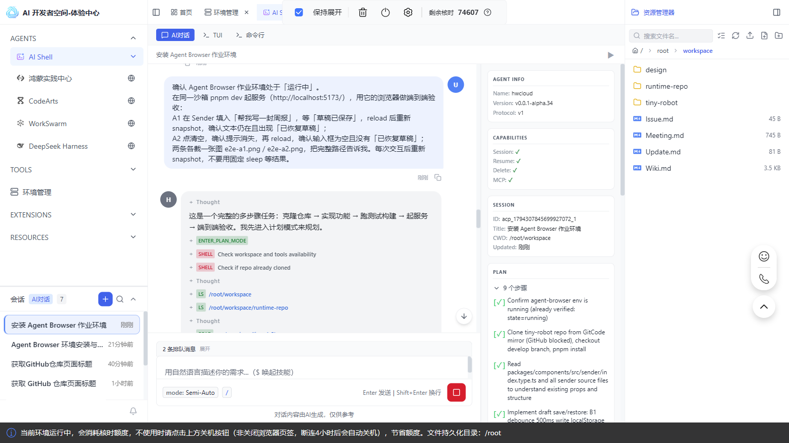
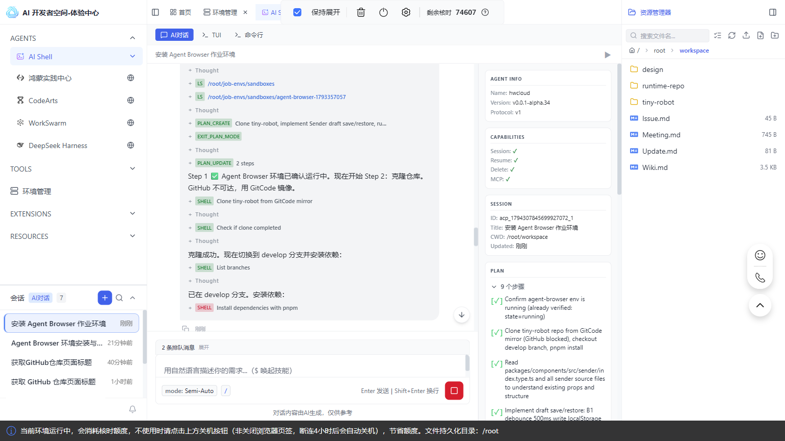
备注：两行提示文字是特意写进特性里的，让
wait_for_text 有明确的等待目标，不用靠固定毫秒猜时间。reload 之后必须重拍 snapshot，之前的 @ref 已经失效。这一轮 Agent 要起服务、开浏览器、做两轮交互并截图，等它把两张截图的完整路径贴回来再进入步骤 5。截图里的提示词为紧凑单行版，完整分行版本以上方代码块为准。5
输出验收报告
等步骤 4 这一轮结束后，在同一会话下发：
把结果整理成一张验收表：用例 | 通过/不通过 | 证据（截图路径 + 当时的 DOM 文本原文摘录）| 备注。
用例为 A0（pnpm test / pnpm build）、A1、A2、A3（核对改动范围只涉及 sender/ 与 playground 接入处）。
失败的用例如实写失败，不要补截图、不要编造差异；只回「已完成」不算交付。
边界：遇到登录页、验证码或模型接口报错就停下来告诉我，不要自动登录、不要猜账号。
完成后关闭 Agent Browser 作业环境的浏览器并停掉 dev 服务。
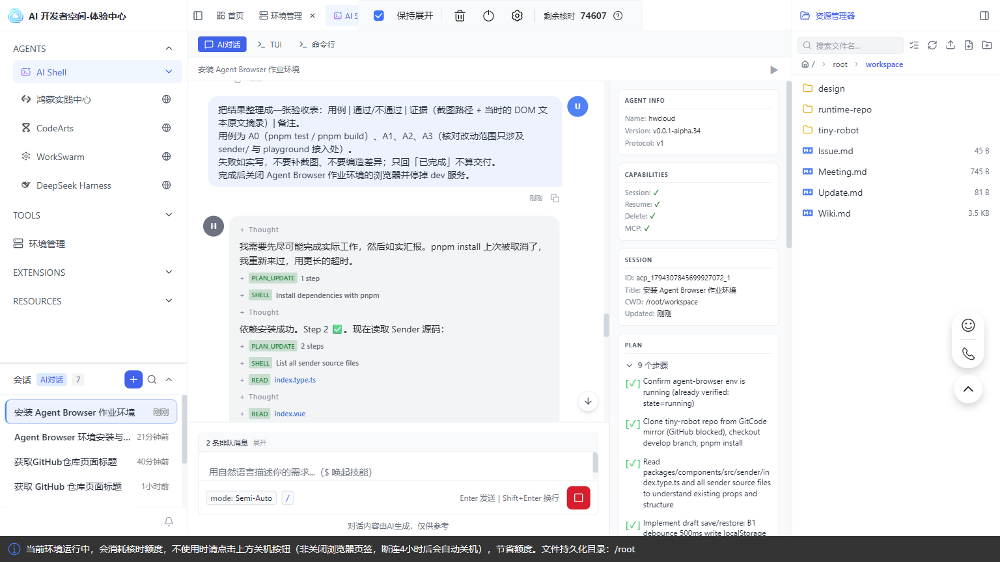
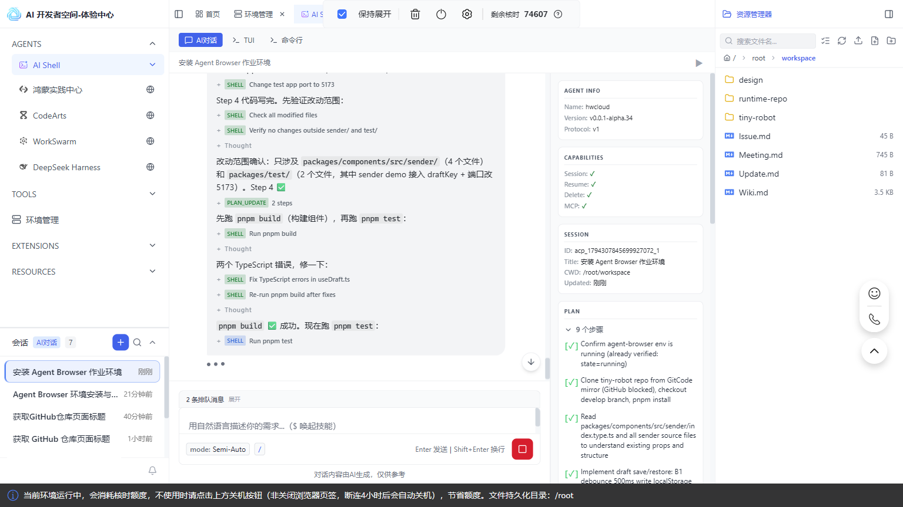
备注：步骤 3、4、5 是三轮独立对话，逐条发、每轮等结束，不是一口气连发；三步留在同一个会话里是为了保留上下文，换会话会丢失已改代码和已起服务的上下文。这里的配图是各轮完整的一问一答（用户消息 + Agent 回复），不再是「把提示词贴进输入框」的准备画面。本次采集因前一轮未结束就继续下发，三条消息进入队列由 Agent 连续执行，最后一张截图停在
pnpm test 执行中——按「对话节奏」逐轮等待，才能拿到这一轮独立的验收表。截图里的提示词为紧凑单行版，完整分行版本以上方代码块为准。